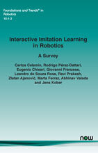
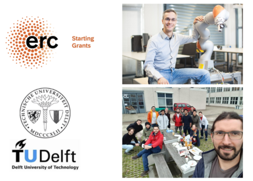
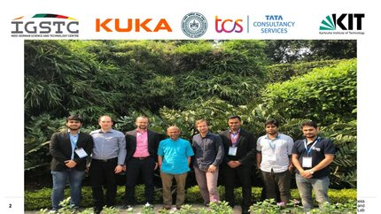
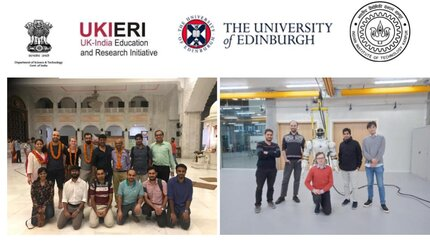
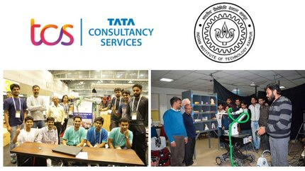
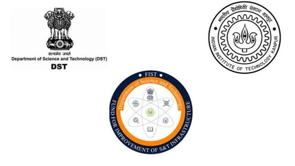
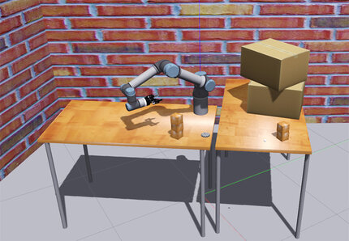
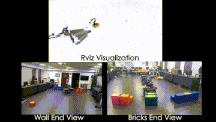
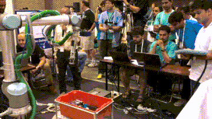
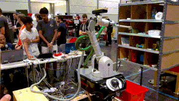

|  | Interactive Imitation Learning in Robotics: A Survey
Carlos Celemin, Rodrigo Pérez-Dattari, Eugenio Chisari, Giovanni Franzese, Leandro de Souza Rosa, Ravi Prakash, Zlatan Ajanović, Marta Ferraz, Abhinav Valada, and Jens Kober
Foundations and Trends® in Robotics: Vol. 10: No. 1-2, pp 1-197.
[NOW Publishers] [IEEE Xplore] [arxiv] |  | AffordMatcher: Affordance Learning in 3D Scenes from Visual Signifiers
Nghia Vu, Tuong Do, Khang Nguyen, Baoru Huang, Nhat Le, Binh Xuan Nguyen, Erman Tjiputra, Quang D. Tran, Ravi Prakash, Te-Chuan Chiu, Anh Nguyen
IEEE/CVF Conference on Computer Vision and Pattern Recognition (CVPR)
[CVF Open Access]
| |  | European Research Council (ERC) Project: TERI
Project Title: Teaching Robots Interactively (TERI). PI: Jens Kober, TU Delft. Working as a Scientific Researcher in this project during my Postdoc at TU Delft. My goal is to realize a scientific contribution in enabling robots to learn and generalize how to perform manipulation tasks from few human demonstrations, based on novel interactive machine learning techniques. Developed interactive imitation learning method to generalise the robot demonstrations in novel situations using vector field transformation. Applications : Cleaning novel surfaces, Dressing clothes, Pick and Place.
| |  | Indo German Science and Technology Centre (IGSTC) Project: TransLearn
Project Title: Robot Skill transfer for Real World Deployment in Manufacturing Industries and Warehouses. Joint Collaboration between Karlsruhe Institute of Technology (PI: Torsten Kroger), KUKA Deutschland GmbH (PI: Rainer Bischoff), TATA Consultancy Services (PI: Swagat Kumar) and Indian Institute of Technology Kanpur (PI: Laxmidhar Behera). Worked as a Scientific Researcher in this project towards the partial fulfilment of my Ph.D. degree. Developed of a imitation learning framework to transfer human skills to a robot in real world. Integrated a intelligent optimal adaptive control to account for uncertainities in the robot model. Practical Demonstrations on household chores like organizing a dining table and serving drinks. Representative Publication under review in IEEE T-CST.
| |  | DST UK-India Education and Research Initiative (DST-UKIERI) Project
Project Title: Learning Robotic Motor Skills, Visual Control and Perception for Warehouse Automation. Joint Collaboration between University of Edinburgh (PI: Sethu Vijayakumar) and IIT Kanpur (PI: Laxmidhar Behera). Worked as a Scientific Researcher in this project towards the partial fulfilment of my Ph.D. degree. Visited School of Informatics, University of Edinburgh to work on this collaboration with exchange of ideas and dissemination of results. Designed a skill learning framework from human demonstrations with coordinated optimal planning and control schemes for real-world robotic applications in dynamic environments. Applications shown in Warehouse Automation with Item Sorting on a moving conveyor belt. Representative Publications in CASE 2022, IEEE T-ASE.
| |  | TATA Consultancy Services (TCS) Project: TSaL
Project Title: Teaching Skills to a Robot. PI: Laxmidhar Behera, IIT Kanpur. Worked as a Scientific Researcher in this project. Designed a skill learning framework from constrained optimal visual servo control via learning from demonstration. Applications shown in retail environment for robotic order picking. Representative Publication in IEEE T-ASE.
| |  | Department of Science and Technology (DST) FIST Project
Project Title: Tennis Playing Robot. PI: Laxmidhar Behera, IIT Kanpur. Formulated a Markov Decision Process model of Table tennis. Proposed a Pavlovian learning model for representingand inferring low-dimensional strategic state features from high dimensional sensory observations at the top level. Dynamic Motor Primitives was used to model hitting motions demonstrated by the expert. Proposed a piecewise-linear canonical system with lyapunov based adaptive gradient descent to learn the shape parameters. Robust controller for mitigating environmental uncertainities. Finally, we have developed a complete system (including a vision system for tracking the ball) using a real 4 degree-of-freedom (DOF) Barrett WAM robotic arm and show that the proposed overall framework is able to respond to an incoming ball with high accuracy. Representative Publication in Ro-Man 2019, SSCI 2020 and IEEE T-CST
| | International Robotics Challenge | |  | IROS 2020: Open Cloud Robot Table Organization Challenge, Online
Team :ISCon_IITK, Lead: Laxmidhar Behera, IIT Kanpur. In this cloud based robotics competition the focus was on the task of table organization, which is the essential capability for service robots and requires breakthrough technology to make it mature. I was responsible for motion control of the robot.
| |  | Mohammed Bin Jayed International Robotics Challenge, Abu Dhabi
Team : IIT Kanpur, Lead: Prof. L. Behera, IIT Kanpur. The Challenge comprised of a team of UAVs and a UGV collaborating to autonomously locate, pick, transport and assemble different types of brick shaped objects to build pre-defined structures, in an outdoor environment. It is motivated by construction automation and autonomous robot based 3D printing of large structures. Developed Visually Guided UGV and AUV for Autonomous Mobile Manipulation in Dynamic and Unstructured GPS Denied Environments for Challenge 2. Specifically, Designed the motion planning and control of the robots along with ROS integration of the overall system.
| |  | Amazon Robotics Challenge 2017, Nagoya, Japan
Team : IITK-TCS, Lead: Laxmidhar Behera, IIT Kanpur. The Challenge comprised of designing and developing a fully autonomous system which can attempt simplified versions of the general task of object manipulation stowing picking in the warehouses. Each task in the challenge was comprised of known and novel items (provided 45 minutes prior to the challenge) distributed equally. In this competition, I worked as a team member responsible for robot motion control. We defined a cartesian approach based on the MoveIt! pick and place pipeline that took the target grasp candidate and computed a combination of linear segments to app- roach, contact grasp the target object, lift it after grasping and retreating with it. The TRAC-IK library is used for inverse kinematics, configured to enforce minimal configuration changes, and then collision checking is done with MoveIt! using the PointCloud information from the camera. We won 3rd Prize in Picking and 5th Prize in Combined Finals among a total of 40 International Teams
| |  | Amazon Picking Challenge 2016, Leipzig, Germany
Team : IITK-TCS, Lead: Laxmidhar Behera, IIT Kanpur. Theme of challenge remains same as of Amazon robotics challenge, 2017 with all items known a priory and no clutter. As a team member, I was responsible for motion control of mobile manipulator. We won 5th Prize in Stowing among a total of 40 International Teams.
| |